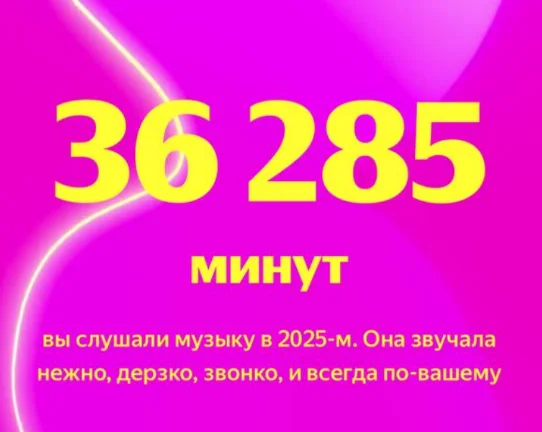
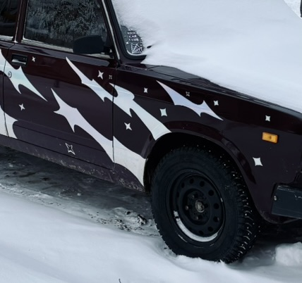
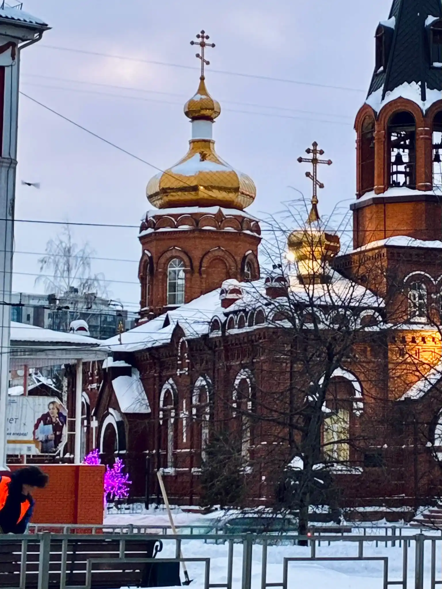

Не ожидала, что Камила Валиева так быстро захочет вернуться на соревновательный лед! Камила заявила об участии в ЧР по прыжкам + в кпк
1. Вот это 4 года быстро пролетели! Но про Олимпиаду (до которой осталось 19 дней) я напишу еще очень много раз
2. Раз заявилась, то вероятно есть что показать. Значит, что какая-то часть тройных восстановлена. Честно говоря, совсем не слежу за ее успехами в шоу, но сомневаюсь, что Камила идет только заявить о себе (это, конечно, тоже, надо же напомнить, что вот была Камила и теперь она снова может тренироваться и учавствовать). При этом я в курсе, что Камила сейчас у Соколовской и думаю, что это отличный вариант для старта.
Так же, надеюсь, что никто не ждет, что Камила будет той же Камилой, что и раньше? Все-таки столько лет прошло + пубертат + перерыв и запрет на тренировки
3. После этой новости и прогрева от Саши Трусовой мне стало страшно, мы в каком году??
4. + почувствовала чувства, когда увидела, что Сашу тренирует Сергей Дудаков, готова плакать! У нас точно не Трусова с Валиевой на Олимпиаду едут (все еще 19 дней)??
Проснулась, увидела новую ливрею Рэд Булла, влюбилась


Все разделы надо обновить... а сколько фильмов я успела посмотреть... а сколько книг прочитать... а уж заметок.......
Были проведены масштабные работы! Никакого косметического ремонта - ломались стены, проверялась каждая половица, я заглянула в погреб, чтобы понять, в чем тут проблема.
Поэтому я переехала туда, откуда начинала. Новый доменчик!! Чек зе линк, так сказать
А сколько времени я откладывала все это, просто потому что такая морокаааа.
Кстати, гирляды тут были сняты тогда же, когда убраны елки дома.
p.s. если вы заходите проспонсировать мне нормальный хостинг - you're welcome, обещаю не сопротивляться!!
Меня не отпускает!! Сколько эмоций у меня вызывают выступления Жени в этом году. Я не знаю, почему у меня так резонирует именно этот спортсмен, но уже много лет это мой фаворит МО. Просто потому что за других я так не переживаю.
А тут я не могу перестать смотреть короткую программу, причем рыдаю каждый раз!! Я за эти вращения и дорожку шагов буду драться!!
В последний раз такое у меня было с Сашей Трусовой (и есть, мне кажется, я только-только переживла Пекинскую драму 2022 года). Там я плачу от одной мысли о ее карьере.
Нет ничего эмоциональнее в спорте, чем видеть, как спортсмены вскидывают руки после последнего исполненного прыжка прямо во время программы. Как они радуются, когда понимают, что сделали максимум. Я плачу вместе с ними от счастья и горя.
Очередное восхищение фигуристами, которые заставляют чувствовать чувства!
Мне сложно ответить, чего во мне больше - рационального или эмоционального.
Но я очень люблю свой подход к любым планам - мне самой с собой удобно, все подбито, посчитано, расписано по пунктам и даже с графиком 🥹
Придумала идею → сверилась с ресурсами → написала план → сразу сделала пару первых шагов, чтобы точно начать реализацию и не отложить.
Говорю же, последние пара дней реально продуктивная!!
На самом деле, очень круто, что в этом году январские такие активные. Я буквально решила провернуть пятилетку за неделю!!
Почему так много моих друзей заходят сюда с телефона, если все красивые обновления я делаю для десктопа??
Или почему я делаю это только для компа?? Кому писать жалобы? Себе же?
Прошу каждого хотя бы раз посмотреть сайт с моего (именно моего!!) ноута, чтобы понять, что хотела сказать авторка!! А не видеть только то, на что хватило сил и знаний по адаптации под маленькие экраны!!
Плотная запись на каникулы: всем рада - все приходите, пишите, со всеми хочу увидеться, по всем соскучилась!!
Ой, декабрь вынуждает вспомнить весь прошедший год! Не верится, что я уложила столько событий и важных этапов в один год!
Было принято много смелых решений! Тут ни о чем не жалею и горжусь собой бесконечно!
Вереница важных решений привела в том числе к созданию этого сайта - моего уютного творения, отражающего my personality (person's reality).
Заканчиваю год в своем прайме, с осознанием всего прогресса и уважением к пройденному мной пути!
Давно пора было, но я почему-то жду именно окончания года!
К слову, 36 265 минут это 604,75 часов, что равно 25,2 дням 🤓
А в списке единственные мужчины, которых я не против была послушать в этом году :)

.webp)
Дурочка забыла, что такое минус 20. Греют только быстрая ходьба и кофе из Ярче.
P.S. Если бы вы знали, как я люблю Ярче!!
.jpeg)
.webp)


У меня курортный роман с банановым флиртом 🥰
Возможно, стоит чууууть меньше рисовать Пете и Аделии, но тут все было решено еще до. Бог с ними в этот Олимпийский сезон, а теперь о любимках!
Матвей Ветлугин, что же ты наделал. Ты заставил меня плакать от счастья. Никаких нервов мне не хватит на это ваше фигурное катание!! Просто взял и показал, как ты умеешь! Спасибо Матвею за этот прокат, я не знаю, что Матвей сделал при подготовке к ЧР, но пусть теперь делает так всегда!
ЕВГЕНИЙ СЕМЕНЕНКО, я даже не знаю, как это комментировать, слов нет, одни эмоции. Я не представляю, как можно было так собраться и прийти на ЧР и показать две чистые блестящие программы! После такого начала сезона, после травмы, после сложных этапов гран-при. Просто показал, что он все еще лучший, все еще здесь и все еще заставляет восхищаться каждый своим прокатом! Спасибо за эти эмоции, ЕВГЕНИЙ СЕМЕНЕНКО!
Нет у меня столько нервов, мужское одиночное!!
Готова ли я к этому? Не уверена!! Но поехали!
Матвей Ветлугин. Как же я всегда переживаю за него. Как же он радует меня своим катанием, спасибо, Матвей!! Сегодня все получилось!
Семен Соловьев. Слежу за ним всегда, желаю тольк чистых прокатов и собраться!! Я знаю, что он умеет делать красиво. Зато не упал на вращении!
Роман Савосин это моя любовь конечно. Харизма в чистом виде. Как же мне больно из-за бабочки на тулупе, каскада и акселя, это просто до слез. Не знаю что с ним, но я просто не представляю почему так могло произойти. Вся моя поддержка Роме!
Макаh Игнатов. Не трогает он меня, конечно, как исполнитель, но как за спортсмена переживаю за него. Сегодня Макар был молодец, хоть и с испорченным каскадом
Андрей Мозалев. Не знаю почему, но я за него переживаю. Молодец, Андрей! Просто зажег, очень рада за него!! И отдельно лайк за костюм очень уж идет!! Красавец! Я просто в восторге! Давно не видела такого выступления от Андрея
Петя Гуменник. Программа звенит, волосы отращиваются. Верю, люблю, слежу и очень жду. Я просто не могу с этой программы. Прическа заслуживает отдельных похвал! Такие косы отрастил!
Марк Кондратюк. Ну эта программа ему очень уж идет! Мне даже обидно за его сальхов, настолько покорила меня игривость программы.
Влад Дикиджи. Звездочка, и как неожиданно после каскада с лутцем получить падение с флипа и минус на акселе… Я не знаю, что с Владом происходит, но что-то стабильность потерялась совсем
Отдельно, как всегда отдельно, я отмечаю эту программу Жени Семененко, которая стала для меня личным подарком в этом сезоне.
Я в целом являюсь болельщицей Жени, считаю, что это очень яркий спортсмен с собственным стилем.
Со сложной подготовкой к сезону, с травмой, со сложными этапами гран-при, где он тем ни менее был всегда на максимуме, на пределе. Каждая мелочь в этой программе влюбляет меня в нее с каждым новым прокатом.
Это прокат, который хочется сразу же пересмотреть (что я и сделала)
Пока вы в него не верите, он зажигает. Браво, Женя!!
Спасибо всем за эти короткие программы, подарили много эмоций!
Смотрю в записи, потому что вообще по пятницам люди работают блин.
Лиза Куликова хрустальная и катает свою короткую очень чувственно.
Ксюша Гущина, эта дерзакая кошка просто гипнотизирует меня! Завораживает весь сезон, ей очень идет эта программа!
Соня Муравьева с такой великолепной программой не смогла показать себя так, как показывала на этапах гран-при. Она раскрылась с новой стороны, но, видимо, стресс ЧР подкосил и были допущены обидные ошибки, очень грустно.
Ксения Синицина со своей программой, которая ей подошла идеально. Эту программу интересно смотреть каждый раз. Ксюша великолепна, она просто гордость всей фигурки. Я смотрю на ее коньки, на движение рук — она великолепна!
Мария Захарова, отличный дебютный сезон, в ней что-то есть! Игривость присутствует!
Аня Фролова воплощает мою любовь к фигурному катанию. Это просто восторг, это такая любовь. Она порхает надо льдом, она творит искусство, она цепляет мой вгляд и не отпускает, я в полном восхщении. Еще я слышала, что она вернула произольную "Кошки", это мне на Новый Год??
Аделя, за которую я переживаю и чья борьба идет отдельно ото всех. И я правда надеюсь, что у малышки все получится в этой игре! Это при том, что я точно не отличаюсь любовью к ней, как к спортсменке, но я прекрасно понимаю, под каким давлением она оказалась и желаю ей стальных нервов и удачи!
Чемпионат России просто сияет!! Все плачут от счастья, и я в том числе. В этом году, правда ощущается как праздник для всех ценителей!
Итак я попробовала новогоднюю линейку от Эпики, мой топ:
3. Имбирный пряник. Полное разочарование, вкус просто отвратительный
2. Мандарин. Ровные чувства, вроде и норм, но ничего необычного
1. Зимний пунш. Самый интересный вкус, вполне себе приятный!
Ноги болят после концерта, голоса нет. Бутылка колы с заправки и Полярная звезда. Ветер холодный, голова свежая.
Женщина в диадеме, пустое метро. Мокрая от пота футболка. Сегодня все мои друзья.
Во-первых, у меня 12 декабря всегда ассоциируется с 2021 годом. Вспоминаем великое
That night in Abu Dhabi
Ой, как эта фотосессия подняла мне настроение!! Мы не сидим сложа руки!!
7 число, вчера была вечеринка с подругами в честь моего др, а я уже... кейс написала!!!
Да, я сделала из празднования дня рождения кейс, я такой человек
Вот тут лежит , добавлю на витрину безделушек
Спасибо всем, кто рядом со мной, я очень ценю каждого! Получилось просто супер!
Как обычно просто кусочки из жизни за эти полтора месяца. Было хорошо! Наслаждаюсь каждым днем и вам желаю того же!
~Ссылка на видео~
В первую очередь спасибо всем, кто поздравил и наговорил кучу теплых слов 🥹
Ну и говорю спасибо себе! За то что собралась и устроила себе праздник! (и подготовка к вечеринке в процессе, дамы, всех жду!!) Получилось очень хорошо!
P.S. Быстрая сводка: любимый штрудель на завтрак, гладила собаку, читала в книжном, гуляла по лесу, фотографировала озеро, великолепно пообедала в любимом месте (милейшие сотрудницы еще и с собой вкусняшек дали!!), обновила колечки, весь день таскалась с бутылкой шампанского (подарив мне бутылку алкоголя, вы обрекаете меня носить ее с собой целый день и привезти домой целой), цветы, мороженое с сердечком, вкусный ужин, гонка с победой Макса, много подарков и фильм перед сном!
Есть вайб, что половина пожеланий мне на день рождения связана с успехами Макса Ферстаппена! Ну а что, корреляция доказана, почему бы и нет!!
Я поняла, что хочу себе Смарт ТВ... Я прочувствовала прикол включения всего на фоне с ТВ (бесконечный плейлист треков Хмырова сюююдааа). Или мне просто понравилось, что тут в спящем режиме включается видео спящей лисички, которая мирно дремлет под деревом??
Выбрала место без связи и не жалею!! Я давно так хорошо не спала, теперь хочу себе такой матрас домой!
Пора признать, что я была рождена для того, чтобы носиться по лесу!! В честь этого подборка картинок про 9 аркан
P.S. у меня сегодня проходит едегодная персональная стратегическая сессия. Надеюсь, что она теперь всегда будет в лесу 🌲
Этот год принес мне много классных людей, с которыми можно просто побыть собой, побесоебить и никто тебя не осудит.
Теперь у меня дома банка песто, 2кг картошки, крошки от чипсов и комната, украшенная гирляндами, спасибо!!
Простите все, кому вчера вечером ныла!! Что-то кринжанула - настроение такое было + не выспалась!!
Хорошо, ладно, мне просто больно и обидно
Я никогда еще не мыла голову так сразу после прихода домой. Я думала, что разуться не успею - настолько хотелось смыть с себя этот день
Односложные ответы! Невозможно просто, когда ты изливаешь душу, делишься всем, что нравится, а тебе отвечают нехотя и через силу, не вкладывая никаких живых эмоцийййййй
Повторили с дамами сбор в честь просмотра шоу про зависимость Ромы Желудя (я не помню имена других участников, я их коверкаю)!!
Поздравляю Дашу с новосельем!! Роскошные хоромы!!
Сегодня я столкнулась с тем, что задача на работе меня так увлекла, что я хотела продолжить ее делать после окончания рабочего дня... Я, конечно, себя остановила, но в душе что-то пошевелилось!! Ой, как хорошо стало! Спасибо за такие разнообразные задачи, я что-то аж с энтузиазмом!!
Очень рада увидеть любимую buddy Ксюшу вживую! Еще и в такой хорошей компании!
Все мысли только о дорогих квартирах и медовиках 🍰🐝🍯
Теперь я в цвете "Восточная корица"
Я просто не понимаю, как чисто физически можно выехать такие прыжки?? Это против законов физики!! Ну, боец!
Я так давно не обновляла разделы с книгами и фильмами, потому что просто не успеваю что-то смотреть... Зато почти дочитала "Отель" Хейли. Как-то он стихийно у меня продвигается. Присутствует корреляция с внешними факторами жизни, поэтому дело не в самой книге
Евгений Семененко заставляет меня чувствовать чувства!!
День рождения в одиночестве в лесу. Мысли? Я в своем познании настолько преисполнилась
Я так люблю, когда ко мне приходят в гости. Приходите, надевайте домашнюю одежду, заваривайте чай и ложитель под плед! Будем болтать, раскладывать карты и смотреть дурацкие шоу!! С меня гостеприимство, с вас улыбка!!
Я лесной трикстер с суперспособностями и мёдом
Спасибо Артему, что уберег от потопа и снабдил оптовыми поставками фрутоняни! 🥺🥺🥺
Оцените декор! Уже новогодний! Нет, не рано, я так решила!!
Алена Владимировна, ну простите бога ради, ну я же уже извинилась, что отправила ночью сообщение без звука! Мне правда жаль, но хватит сторис выкладывать про это, пожалуйста, мне и так стыдно!
Спасибо, что пришли!! Чувствую себя дельфином из песни "Одно и то же"
P.S. Соня, верни ключи, я не могу выйти из дома
Свидание с пиратом в катакомбах, мысли?
Я подготовила серию открыток себе на день рождения. Есть еще вопросы по тому, насколько я люблю этот день??
geborgenheit
Илья Малинин официально сломал фигурное катание, это просто невозможно, остановите бешеного!!
Два дня записи подкаста прошли странно! Опыт необычный, рекомендую!
Рабочая суббота это какой-то кошмар, противоестественно, так быть не должно
А на витрине безделушек появился вишлист! Мне просто понравилось его оформлять!!
Так, есть получается. Вероятно, не очень эффективно, но получается. Ко всему привыкаешь
Отсутствие солнца давит на меня..............
Пока я даже чисто теоритически не понимаю, как я должна есть с брекетами, если жевательные зубы не соприкасаются... Будем изучать данный вопрос
Какой же дроп фотографий добавился сегодня!!
Хороший день начинается с поула Макса Ферстаппена, даже если это задрыпанский спринт
Спасибо, что есть такие люди как Паша, которые приходят в офис из отпуска и кормят всяким вкусным в честь собственного дня рождения
Чем я только не занималась за последние дни. Я как в городе профессий, пробую себя каждый день в новом. Могу и статью дописать, и креативы сделать, и согласовать все это дело!!
А мне сосед в лифте мило улыбнулся и пожелал доброго утра!! Живем, живем!!
Просто зафиксирую итоги утра: я не могла уснуть всю ночь, меня тошнило, метро на вход закрыли, и я не смогла доехать до офисе, где вчера оставила все вещи
Я не могу пройти мимо Тыквенного Стаса, посмотрите все!!
Я сегодня видела 3 борзые и колли! Хороший на собак день!
Уши отморозила, матча вкусная! Вишневый пирог еще вкуснее!!
Это что, вторая часть романтизации жизни? Отвечаю в видео на вопрос, есть ли жизнь после Барнаула, развеиваю мифы!
~Ссылка на видео~
Я записалась на бесплатную игру!! Очень давно хотела попробовать, все не знала где, а тут попалась запись на игры
Итак, в субботу пойду в очень недобную локацию, но надеюсь, что все будет не зря!!
Мне даже прислали анкету для создания персонажа! Я выбрала только расу и класс, остальное оставила мастеру игры. Мой выбор остановился на зайцегоне-плуте!! Посмотрим, что из этого получится!
Ой, там такое на виитрине безделушек, ух
Дневник зубов: рот все еще болит, орехи все еще нельзя есть. Неважно. Есть лишь одно лекарство, которое может мне завтра помочь. (Передайте Максу пж)
В ветрине безделушек обновила календарь за сентябрь! Всем смотреть! Красиво!!
В любом случае, мне понравилось фиксировать все события месяца, особенно размещать их на клеточках дней и визуализировать ~~~
Вот так вот в день рождения Макса мне пришлось удалять зуб мудрости... Было долго, больно, страшно. Все страдали: врачи, я, все мои знакомые, которым пришлось слушать мои истории потом. Мелкий безобразник сидел далеко и его не было видно!! Меня хотели отправлять в стационар! Короче, тяжело было и вечером, и ночью. Но ничего! Зато мы с зубом теперь оба дома, но уже сепарированы друг от друга!!
Чего я только сегодня не делала!!! Я и в кино сходила, и погуляла, и до подписных дошла, пообедала, греясь на солнце. Сходила в Казанский и на органный концерт, дошла до библиотеки сдать книги. Посмотрела контрольные прокаты по фигурному катанию, сделала генеральную уборку, перестирала все вещи, приготовила ужин...
Последние три дня я буквально олицетворяю Джима, только я пока не поняла, где находится камера, в которую надо смотреть
Как хорошо собрать у себя дома друзей и сидеть при свечах целый день в темноте!! Буквально идеальный день: с утра великолепное выступление Пети, прогулялась, убрала всю квартиру, проболтали весь день с девочками у меня дома, пораскладывали таро, посреди дня все вместе посмотрели выступление Аделии Петросян, мне подарили сувениры и еду (!!!Киткат!!!), вкусно поели, перед сном посмотрела квалификацию ф1 в Баку, Макс взял поул!!! Это же буквально реализация рецепта идеального дня!
Вставь в 5 утра ради такого проката стоило того! Невероятно! Великолепно! Как хорошо!
Сходила на полиграф! Посидела со всеми проводками и датчиками! Отвечала на кучу вопросов! Интересный опыт...
Кто бы мог подумать, что я буду с таким волнением смотреть, да еще и пересматривать, прокаты Аделии Петросян!! Аделя молодец!!
Почему я так переживаю за Петю Гуменника и Петросян на отборе?? Я прям не могу перестать думать о том, что им надо попасть в топ-5... Придется проснуться в 5 утра в субботу, чтобы посмотреть короткую программу у мужчин...
Я пока не придумала, куда складировать одностраничники, поэтому оставляю ссылку на фотографии тут
Сложно предсказать, сделаю ли я еще подобных штук или останавлюсь на этом... Такая я загадка, конечно!!
Давно хотела! И сделала!
Замутила себе собственный шрифт! Вряд ли я, конечно, буду его использовать где-то, но опыт интересный, особенно учитывая, как я люблю писать от руки.
Хотелось бы еще запариться сильнее и сделать прям слитный текст от руки или хотя близкое к тому, но это уже прям ~проект~
Я тут подумала, а смогу ли я сделать какой-нибудь одностраничный сайт 🤔 Ответ убил... Посмотреть можно тут и на вкладке на этом сайте!!


Вы думали, что я забью? Нет!! Я страшный человек
Суть истории:
Девушка заказала пробник духов 1.5 мл (tom ford bitter peach, они жесть какие удушливые)
Я со всей заботой и оперативностью упаковала и отправила это все дело
В итоге, она отказывается от заказа. Я уже испугалась, что вдруг что-то разбилось в дороге или пролилось. Но оказывается, она просто воспользовалась духами и они ей не понравились
Давайте зафиксируем, что она "пшикала" пробник 1.5 мл в ПВЗ авито, пытаясь разобрать там верхние ноты парфюма, вечером после наверняка рабочего дня.
Еще раз: tom ford, 1.5 мл, ПВЗ, ноты парфюма
Что я после этого должна делать с уже не полными 1.5 мл? Короче, это оказалось немного серой зоной правил авито, поскольку у них при получении доставки нельзя мерить одежду/обувь, включать технику и тд, а вот про парфюм, оказывается, ничего не написано. Поэтому пришлось немножко поразговаривать с поддержкой (3 дня), заполнить пару заявлений (2 шт), предоставить им несколько фото/видео (5 штук) и вау-ля! Компенсация стоимости заказа
Вы скажете, что я странная, но тут дело было не в деньгах, а в защите чести!!
P.S. Если что, вопрос даже не к покупательнице, а именно к правилам Авито, с девушкой я очень вежливо общалась и ее не виню!!
Плюс одна странная история о работе в копилку!
Как же я ненавижу некоторых людей на авито, это просто кошмар какой-то, сколько же там быдла и мошенников
Я еще не знаю, что на что именно, но я благословлена! 🥺
Эта малышка ехала со мной в метро! Перед моей остановкой она улетела с коленки 🥰
Как хорошо, что тут я одна
Посмотрела я значит программы Петра Гуменника на этот Олимп-кх-кх-ский сезон...
Я не буду ничего говорить и вам запрещаю! Не сглазьте его, сдувайте с него пылинки, любите его и болейте за него всем сердцем!
Удачи, Петя! Боже, дай сил пережить этот сезон!!!!
Я запрещаю себе писать первой каждый раз! Надо хотя бы попробовать дать другому человеку написать первым!!
Если бы вы знали, как я люблю романы Донны Тартт, как же я сейчас с удовольствием читаю "Маленький друг", прям очень приятно
Итак, мой любимый список "редких" эмодзи:
🐦🔥 Огенный феникс, без комментариев
🧌 Лесной мужик
🫙 Пустая банка
🪤 Мышеловка, убедительная конструкция
🪅 Пиньята
Лось, портрет (не из "Шаг вперед")
🫧 Bubbles
🪔 A diya
🎐 Музыкальная подвеска!!
🃏
🪜 Стремянка
Как видите, мне пора найти работу
Если у вас есть работа для меня, то можете связаться со мной!
Могу быть сыроваром, экспертом гонок, критиком, авитологом, астрологом, тарологом, и любым другим ологом. Человек разносторонний!
Я поняла, мне надо добавить сюда возможность выставлять фото в каруселе, потому что у меня слишком много всякого, что должно сопровождаться раздаткой!!
Девочки сегодня пришли ко мне с цветочками!! Приходите ко мне в гости! Всех напою чаем и сможете забрать с собой пару книжек!
Не ну это уже даже часто. Девочки сказали, что им бы хотелось на такое посмотреть, а кто я такая, чтобы отказывать
~Ссылка на видео про успех~
Хорошо посидели! Уютно, душевно, по-доброму
Лучше всего понимаешь себя и свои собственные чувства/мысли в разговоре с другими людьми. Надо чаще обсуждать всякое с друзьями 🐝
Приходите еще, you're always welcome!
Бывют такие люди, про которых после одного сообщения на авито можно сказать, что это не лучший человек. Пожалуйста, хватит решать за меня, ошиблась я в цене в объявлении или реально сошла с ума и прошу такую сумму, уходите
Не так давно я снова столкнулась с тем, что безответственные ребята отменяют заказы, когда ты уже с посылкой стоишь на пункте отправки. В такие моменты хочется простого человеческого заблокировать всех к черту и больше никогда не отвечать на сообщения на авито
Не определение успеха, установленное обществом, а именно для тебя. Что такое успех?
Отхватила билет на последний показ "Марева любви" в Субботе 🥹
А зная, что это Суббота, мне точно понравится. Пока что я ни разу не уходила оттуда разочарованная, только одухотворенная и вдохновленная
За последние пару дней я отправила доставкой 12 книг. Как же мне нравится упаковывать, готовить и отправлять книги новым хозяевам, которые смогут полюбить их (или возненавидеть) также, как и я
Сегодня я узнала, что мне нравятся индукционные плиты
Тяжело переезжать, когда ты одна да еще и супер упрямая. Благодаря этому я все вещи переношу на руках 🤡
Сверху, когда летишь на самолете, можно заметить, что облака похожи на лед, намерзший на морозилке. Или на воздушные непокоримые горы
Пучки деревьев выглядят как ворс ковра
Дорога в лесу — полоса оставленная пылесосом на ковре после уборки
Так вы можете понять, что мне досталось место у окна в самолете
Не могу остановиться читать Правду о деле Гарри Квеберта. Случайно увидела эту книгу, и она меня затянула, хорошо как!!!
Заметка дня: Борщевик очень-очень-очень неприятный тип. Но если вы все-таки познакомились с ним, то у меня есть список вещей, которые нельзя делать:
1. Ни в коем случае нельзя лопать волдыри
2. Нельзя забывать на неделю о том, что вам встретился борщевик
3. Нельзя мазать волдыри йодом
4. Я серьёзно, нельзя прокалывать волдыри
Какие же люпины красивые цветы! Разноцветные, яркие, интересные, эффектные!!
Сегодня продала старую засохшую акварель.
Девушке, которая ее купила, такие краски в детстве дарила бабушка и она искала такую же, но все никак не могла найти.
Для меня это была старая акварель, напоминавшая о нелюбимой художественной школе, а для нее это редкая вещь, которая напоминает бабушку (´｡• ᵕ •｡`) ♡
Сегодня 1 августа, а значит пришло время подводить итоги моего беззаботного июля. Накопилось красоты много, поэтому пришлось оживлять канал на ютубе 🤧
В последний раз там были видео по ЧГК (5 лет назад, почти свежие), поэтому всем старым подписчикам передаю привет и респект за ожидание
~Ссылка на видео про мой июль дома~
Весь июль я старалась жить по принципу Minimum Viable Product.
Он отлично помогает бороться с перфекционизмом, который часто бывает неуместным. Я начинала с общей картины, намеренно игнорируя детали. Например, при создании этого сайта я сначала накинула основу всех страниц, и только потом сосредоточилась на мелочах — фавиконе, наполнении контентом и прочем.
Иначе был бы высокий шанс залипнуть на главной странице, вырисовывая каждую деталь и в итоге потерять весь запал и силы — на этапе, когда готова лишь сотая часть проекта.
Такое уже случалось раньше: в погоне за недостижимым идеалом я теряла суть и, что ещё хуже, — желание продолжать.
Теперь я делаю упор на минимальный, сырой, но цельный и готовый продукт. И это касается не только проектов, но и других сфер жизни.
Ведь сначала кольцо паяют — а полируют потом (она сходила на 1 (один) мастер класс по созданию колец)
Мудрость дня: если ты попала под град и дождь, не взяв с собой зонта и даже кофты, не переживай, это знак заказать мороженое и никуда не идти вечером
Нет, ну вы посмотрите на эту оранжевую майку! Каждому по такому луку!!
Эксперементальным путем было выявлено, что самый лучший массажист - это немой массажист. Иначе есть возможность подвергнуться допросу со стороны человека, который держит тебя за шею
Бред Питт влюбил меня в свое каре с ровным срезом в фильме Bullet train. Теперь тоже хочется отстричь волосы и собирать их в небрежный хвост